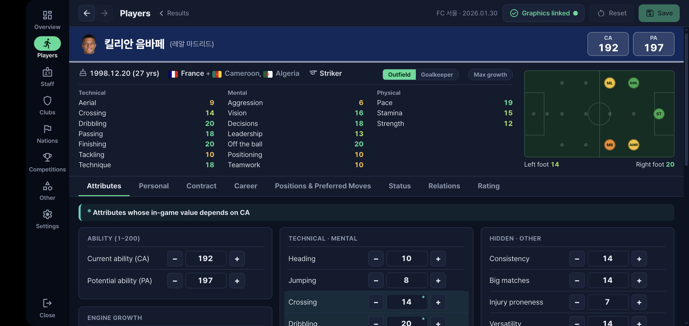
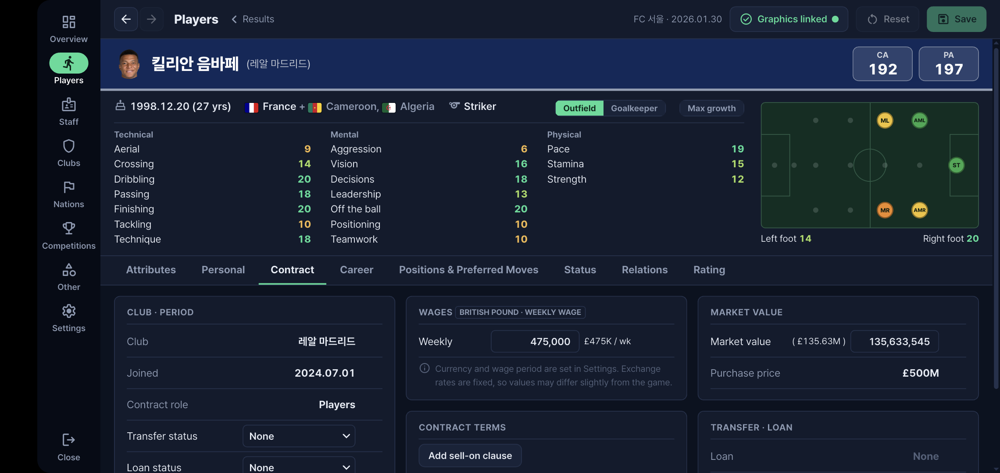
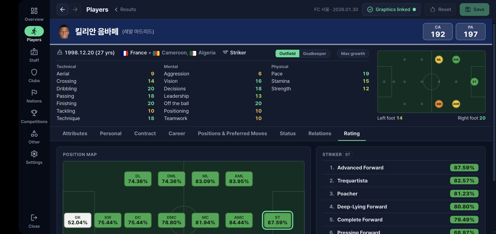
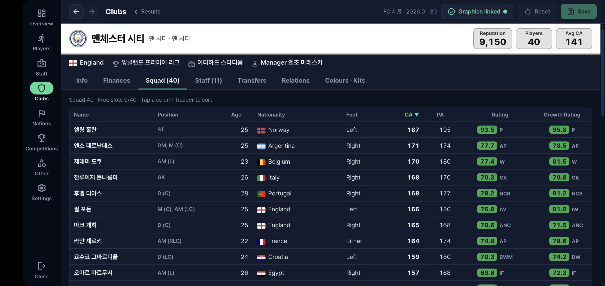
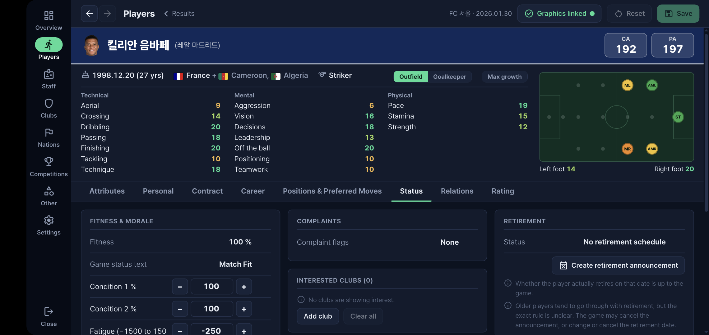
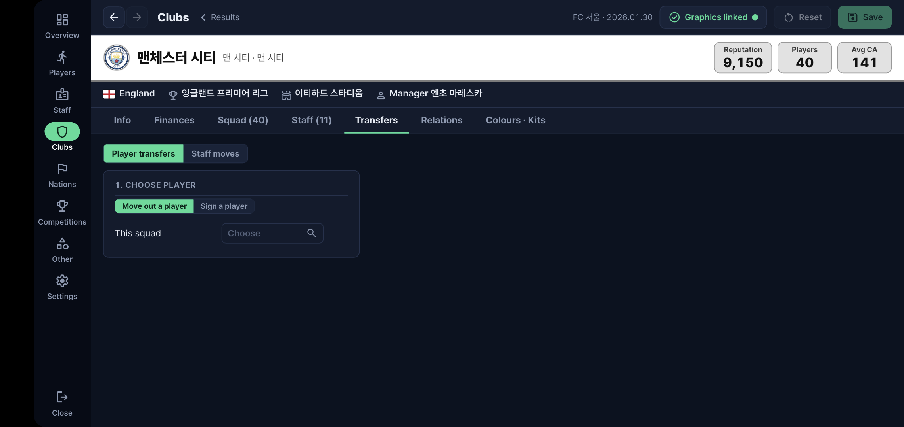
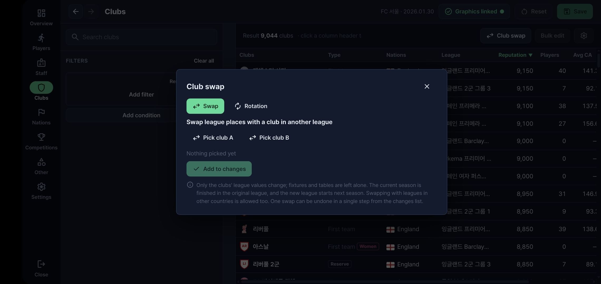
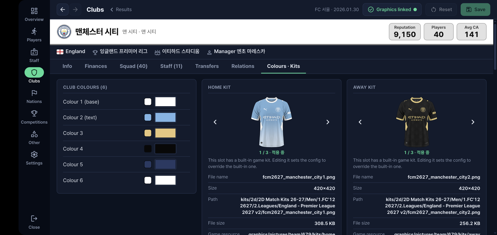
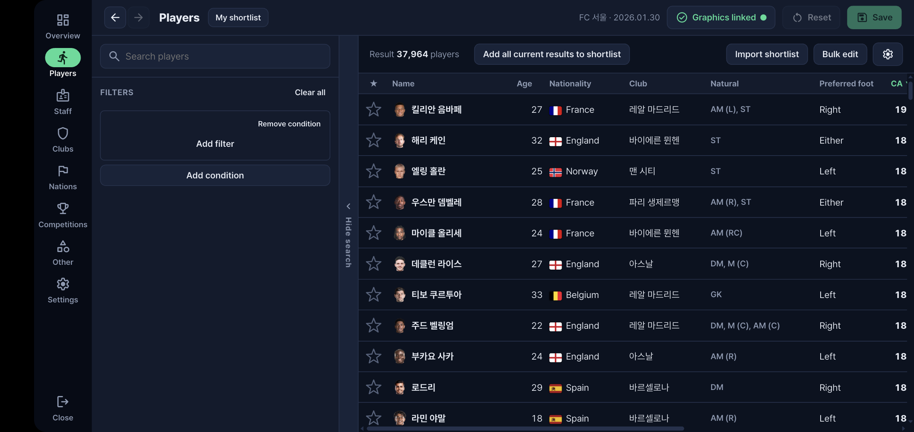

능력치 · 히든 편집
능력치부터 히든까지, 원하는 선수로.
기술·정신·신체 능력치부터 CA·PA와 숨겨진 성격 능력치까지. 원하는 항목을 직접 수정하며 내가 상상한 선수로 만들어 보세요.
관련 사용법MANAGER SAVE EDITOR · FMM27 전용
Football Manager Mobile 2027의 세이브를 더 자유롭게. 선수부터 구단까지, 당신만의 축구 세계를 만들어 보세요.

01 / FEATURES
선수 한 명에서 시작해, 당신의 축구 세계 전체까지. MSE에서 만날 수 있는 가능성을 살펴보세요.
능력치 · 히든 편집
기술·정신·신체 능력치부터 CA·PA와 숨겨진 성격 능력치까지. 원하는 항목을 직접 수정하며 내가 상상한 선수로 만들어 보세요.
관련 사용법구매 가능금액
시장가치와 영입에 필요한 금액은 다릅니다. 판매 구단의 이적료 수락 기준을 바탕으로 계산한 구매 가능금액을 확인하고 영입 예산을 계획하세요. 개인계약 성사 여부는 별도입니다.
관련 사용법
선수 레이팅
포지션과 역할별 점수로 선수의 강점을 확인하세요. 같은 선수도 역할에 따라 달라지는 레이팅을 살펴보고 활용할 자리를 찾아보세요.
관련 사용법
성장 레이팅 비교
현재 레이팅과 성장 레이팅을 나란히 비교하세요. 즉시 전력감과 시간을 들여 키울 유망주를 구분하고 영입의 기준을 넓혀보세요.
관련 사용법
선수 성장
게임 엔진에서 확인한 성장 계산을 바탕으로 단계별 성장과 풀 포텐셜을 적용해 보세요. 주력·근력·스태미나는 모델 기반 근사 계산을 사용합니다.
관련 사용법

선수 다중 수정
현재 검색 결과나 관심선수 명단을 대상으로 여러 항목을 함께 수정하세요. 숫자 증감과 하한·상한을 지정하고 적용 전 선수별 결과를 미리 확인할 수 있습니다.
관련 사용법회복 · 상태 관리
부상을 해소하고 컨디션과 사기를 회복하세요. 한 선수의 상태를 직접 확인하거나 다중 수정의 회복 버튼으로 여러 선수를 함께 관리할 수 있습니다.
관련 사용법

구단 리그 스왑
다른 리그의 두 구단을 맞바꾸거나 여러 구단의 리그를 순환 이동하세요. 현재 시즌을 마치고 다음 시즌부터 새로운 리그에서 도전할 수 있습니다.
관련 사용법
환생 선수 찾기
새로운 선수들 사이에서 과거 선수의 흔적을 찾아보세요. 환생 정보와 원본 선수 추정 결과를 확인하며 다음 세대의 주인공을 찾아볼 수 있습니다.
관련 사용법
관심선수 명단
선수 옆 별표로 영입 후보를 모아두세요. 명단 안에서도 검색·필터·정렬하고, 표시할 열을 바꿔 나만의 선수 비교표를 만들 수 있습니다.
관련 사용법
그래픽 패치
원하는 선수 페이스팩과 구단·대회 로고, 유니폼을 등록·교체·삭제하세요. 게임 그래픽 파일 접근에는 Shizuku 연결이 필요합니다.
관련 사용법

02 / DOWNLOAD
스토어 출시 후 다운로드 링크와 QR 코드가 이곳에 표시됩니다.